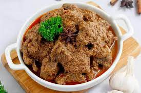

Rendang`s Recipe

Description of Rendang
Rendang is officially recognised as one of Indonesia's national dishes.
Rendang is most often described as meat slow-cooked
in coconut milk and spices until it becomes tender.
ingredients
- meat
- coconut milk
- chilli
- ginger
- garlic
How to make:
- Cut the beef. Cut the beef into 4 cm squares, half cm thick. Do not cut the beef too small as the meat can break into smaller pieces during cooking.
- Blend the spice.
- Saute the spice.
- etc